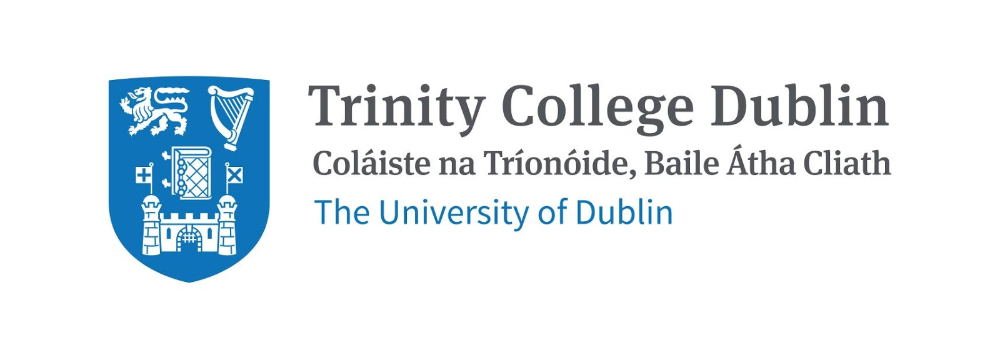
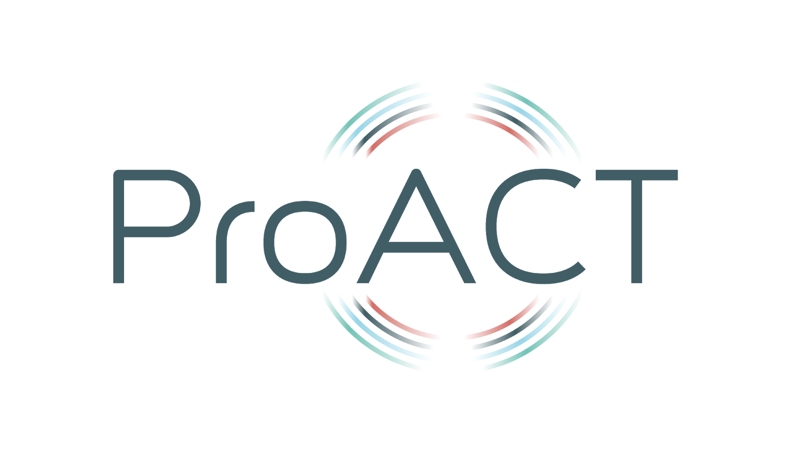

User Experience Panel: Accessibility for Living
Panel Members
-
Caroline McGrotty
Willing Able Mentoring (WAM) Programme Coordinator, AHEAD (Association for Higher Education Access & Disability), Ireland
Caroline McGrotty holds a Bachelor degree in Deaf Studies from Trinity College Dublin and a diploma in Irish Sign Language Teaching (TCD). She also has a higher certificate in Equality Studies from UCD. Caroline has over ten years’ experience of working and volunteering with various organisations within the Deaf community. She is currently Vice-Chair on the board of Sign Language Interpreting Service (SLIS) and the WAM Programme Coordinator for AHEAD.
-
Matt McCann
CEO, Access Earth, Ireland
Matthew McCann has a Masters in Computer Science (Software Engineering) and has strong domain knowledge having Cerebral Palsy. Using his first hand experiences about the lack of accessibility information available, Matthew built the first Access Earth prototype in 2014 while studying at Maynooth University. After graduating top of his class in 2015 he set up Access Earth Limited determined to tackle this global problem.
-
Stuart Lawler
Business Development Manager, Sight and Sound Technology
Stuart Lawler is Business Development Manager with Sight and Sound Technology, a UK-based Assistive Technology company, who have recently expanded their operations into Ireland. He previously held a number of technology and training positions with the National Council for the Blind of Ireland, most recently as head of Technology Innovation. A totally blind user of technology Stuart is passionate about how the right combination of mainstream and assistive technology can empower people with disabilities and transform their lives. He believes especially, that for people with sight loss, technology is the greatest enabler for equal access in society.
-
Brendan Gallagher
ProACT Co-design Panel Member and Retired Management Consultant
Brendan Gallagher is a chartered accountant who spent his entire career in management consulting at staff and partner level in a leading financial services firm in the UK, Ireland and Switzerland. He has had overall responsibility for the development of management consultancy in Ireland at a time when there was little indigenous activity. The introduction of sophisticated information technology was used as a market entry strategy in the Irish private and public sectors. Development of professional skills was undertaken with colleagues from throughout Europe in joint training programmes. The Irish provided leadership in financial modelling before this was generally available and contributed at third level and post graduate level to the development of professional standards for an ever increasingly complex field.
Chairs
-
Dr Donal Fitzpatrick
Lecturer, School of Computing, Dublin City University
-
Dr Emma Murphy
ProACT Research Fellow, School of Nursing and Midwifery, Trinity College Dublin
Abstract
The user experience panel will comprise of end users of accessible technology who have also been involved in the design and evaluation of digital innovations. During the session we will explore examples of how technology can enhance or hinder access to work, health and education. We will also consider how other contexts such as entertainment, fashion, cooking, music, travel and sport are affected by the availability of accessible solutions. We will explore the role of end users in the design of technology to support and promote accessibility. Panel members will share their perceptions and experiences of leading and/or participating in the design and evaluation of technologies and the delicate balance between engaging users without burdening them. We will also involve contributions from attendees of the ASSETS conference, and hope to include contributions from twitter.
 